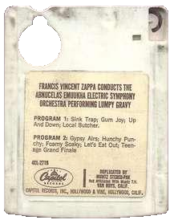
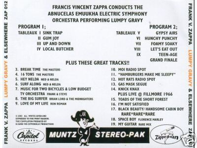

Заппа'zУх!Ой!
русский более или менее регулярный бюллетень для поклонников американского композитора
Frank'а Vincent'а Zappa'ы
Выпуск.51 (7 Августа 2004)
Двадцать три минуты
Чудесный город Петербург. Окно. Сквозняк. И перекрестки с нечетным числом углов. Любимое - пять. Там узкие торцы домов в одно окно похожи на буквы "п" в русском слове Заппа. Плечо к плечу. Провоцируют. Наверное. Это я по письмам сужу. Пишут с низких берегов широкой реки. Регулярно. Вопросы задают. Интересуются. Фрэнком Винсентом. Человеком предпочитавшим четному нечетное. Odd to even.
Честно. На днях, буквально, прилетело очередное. Послание из северо-западного далека. Виктор Зацепин спрашивает, как товарищ товарища. Много ли я бутлегов FZ накопил и где беру? Грибницу просит показать. По-братски поделиться. А я ему довольно высокомерно, как инженер и военспец, отвечаю. Де, миль пардон, коллега, но бутлегами не очень-то интересуюсь. Кое-что волна прибила, есть на полочке. Но, в общем-то, если по-честному, то глуховат, полезный сигнал от шума плохо отделяю, и потому предпочитаю лишний раз послушать The Best Band You Never Heard In You Life, а не Flo'n'Eddie из-под полы.
Да. Вот так вот брею, хорошего, наверное, человека. Сурово. А сам ведь, действительно, пособник и двурушник. Ага. Потому, что правой мышкой за Советскую власть, а левой, тут же Родину белофинам продаю. Пытаюсь не что-нибудь, а бутлег, черта лысого в коробке, прикупит.
Впрочем, бутлег особенный, и как бы не бутлег даже. Есть оправдание. Всего лишь незаконная оцифровка законной записи. Официальной. Ну, скажем, просто в зеркале отразилась. Вещь. Настоящая. И стала просто шиворот-навыворот. А так - будто живая. Самая редкая из всех рожденных Паппой в браке. Капитоловская версия Lumpy Gravy.
Всем известная история. Ник Венет пригласил ФЗ подирижировать оркестром, а злые люди из Verve/MGM уже готовый мастер отсудили. Слизнули подметки на ходу. Одним движением. Обе. Разом. И тем не менее следы остались. И не только хрустящий, словно чипсы за ушами демо-ацетат, но и настоящий, товарный стерео-микс. Самая редкая из всех легально выпущенных записей Фрэнка Заппы. Earl 'Madman' Muntz Stereo-Pack. 4CL-2719.

Был такой безумец в солнечной Калифорнии. Изобретатель-самоделкин. В наполеоновской треуголке рассекал и торговал спортивными авто ручной заточки. Для которых в конце пятидесятых и придумал примочку супер. Эксклюзив. Компактный стереомагнитофон с картриджем. Four-track.Вещица довольно увесистая в сравнении с современной компакт-кассетой, но, впрочем, не крупнее первых сотовых телефонов. Карман оттягивает, но лежит. А в автомобильном бардачке и вовсе можно целый склад устроить.
И чтобы не скудел Безумный Эрл охотно лицензировал свой хот-род аудио-формата всем окрестным студиям, а те старались. В свою очередь. Угодить чувакам в мотоциклетных шлемах. А-то ведь с бейсбольными битами гуляют. Известное дело.
Впрочем, шутки шутками, но похоже 4-х и 8-ми треки в шестидесятых шли первыми среди форматов в которые звук заворачивали. Пилотные. Так и успел Капитол. Опередил адвокатов MGM/Verve и судебных приставов. Выпустил "оригинальный" микс. Потом уже, когда юридические колеса закрутились, пришлось, конечно, отзывать красавца. Рубить на мелкие кусочки. Но кое-кто купить успел. Обзавелся версией Lumpy Gravy без слов. Пара тройка счастливчиков. Теперь сидят. Молчат. Любуются.
И только один вдруг в январе 2001 решил расстаться с сокровищем. Выставил на аукцион. К сожалению, eBay архивы не уважает, не держит, не собирает, так что полюбоваться предлагаю только моментальным снимком одной из стадий исторических торгов. Страничкой калекой, которую я сам сохранил. Случайно. Не знаю почему. Как видите, в запасе еще три денька а за кое-что и сбоку бантик уже предлагают 1,026.00 USD. Закончилось же все штукой-шестьсот очень и очень даже не условных единиц.
Ну и понятно, как тут сердцу не забиться, когда уже в 2004 на все том же шитом-крытом не-выдам-не-скажу eBay'е за какой-то тридцатник баксов уходит вот что.

Бутлежина с логотипом Muntz Stereo-Pack. Lumpy Gravy and Elsewhere. Она же еще дешевле на gemm.com.
Неужели? В самом деле? Слили с четырехдорожечного аналога имени Мунца 4CL-2719 и wav'ом накидали на серебро диска?
Надежда, в общем. И вера, любовь.
Нет, увы. Не сбылось не случилось. Все тот же ацетат. Капитоловское демо, что уже ходит не один год от фаната к фанату. В общем, подсудное дело. Недобросовестная реклама. Что безусловно серьезно усугубляет прочие нарушенния УК и не только РФ.
Пираты. Одно слово. Гопота бесштанная, чего с них взять. Обманули.
В общем получил я письмо от покупателя, доброго человека, и так загрустил, что взял и этот самый ацетат скачал. Ага. Благо, что в процессе выяснения истины три человека в двух разных форумах предлагали зайти к ним трэкером или же просто сделать ftp. Не удержался. То есть, пять лет смогал, а на шестой не сдюжил. Хапнул.
Преодолел свою шумобоязнь и скрипофобию. Отбросил и прочие штабс-капитанские замашки. Снобские. И не жалею. И музыка прекрасная - сил нет, и никто про "round things are boring" не талдычит. Не втирает, там где смычки должны быть. Смычки и дудки. Исключительно.
Но прелесть даже не в непрерывности звучания. Не только в двадцати трех минутах чистой музыки, а в сравнении. Привычного LG и непривычного. Первого и второго. Черновика и чистовика. Вся кухня Фрэнка тут весомо, грубо зримо. Пять минут разрезать на шесть частей. Неравных. Шашечками склеить. Переставить задом наперед и четыре раз повторить. И это только для начала. Потому, что мир бесконечен, и связан-перевязан, сцеплен, склеен, сложен, и как его не переделывай - он все равно един и неделим.
Вот.
А с Виктором Зацепиным я все же пообщался. Поговорил по-нашему. Не стал медалями бренчать. Фуражку снял и шашку отцепил. Как друг-коллега. Естественно. Конечно. Объяснил, где берут такие вот прелести. Алмазы и бриллианты чистой воды. Пусть и со скрипом. За деньги, и так уже понятно, на eBay. А даром тут.
Удачи!
Искренне Ваш, Владимир Советов
http://www.arf.ru/
| Домой | Заппа'zУх!Ой! | Поиск | Хозяин |